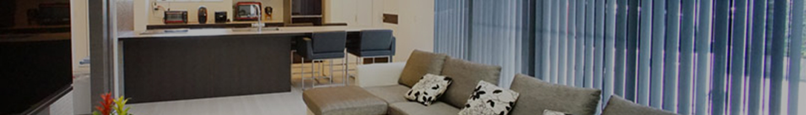
works 施工実績
大網白里市
K様邸
広々としたリビングは、全て同じ色調のトータルコーディネートされたインテリアで統一し、落ち着いた空間となりました。壁にもニッチ収納を設けるなど、遊び心と実用性を兼ね備えた住まいとなっております。2階からさらに続く階段を上がると当社自慢の屋上庭園が広がり、その先には広大な自然が見渡すことができるお家です。
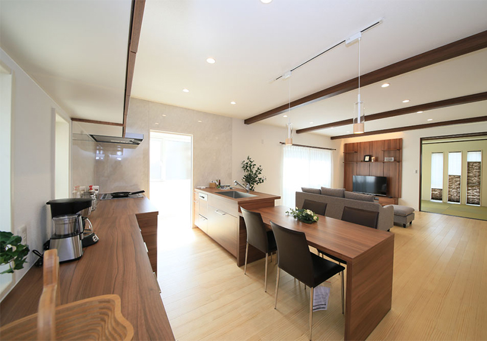 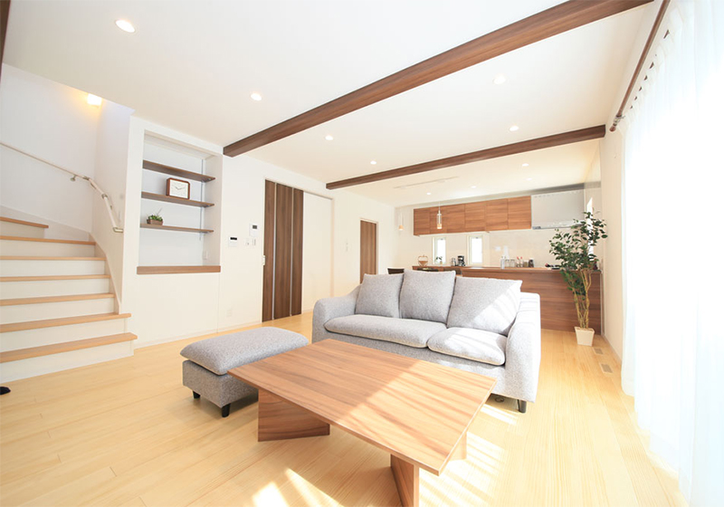 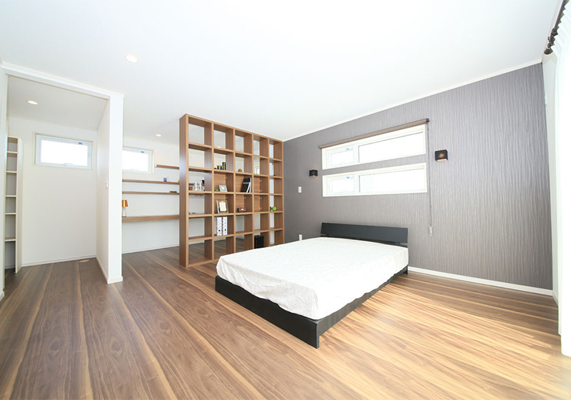 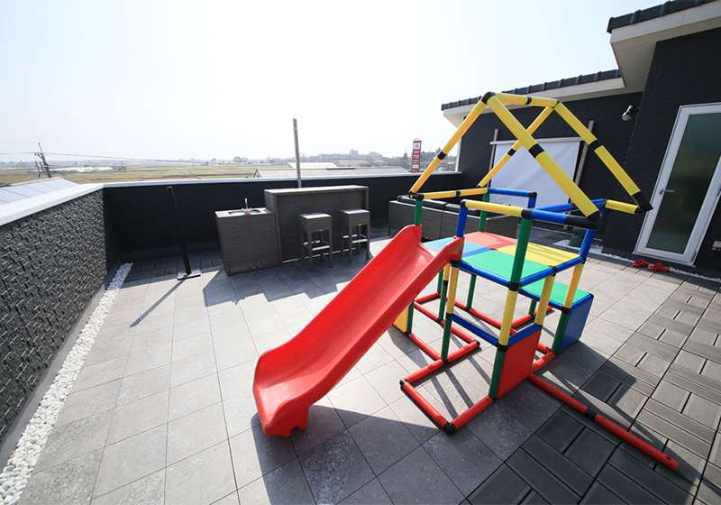 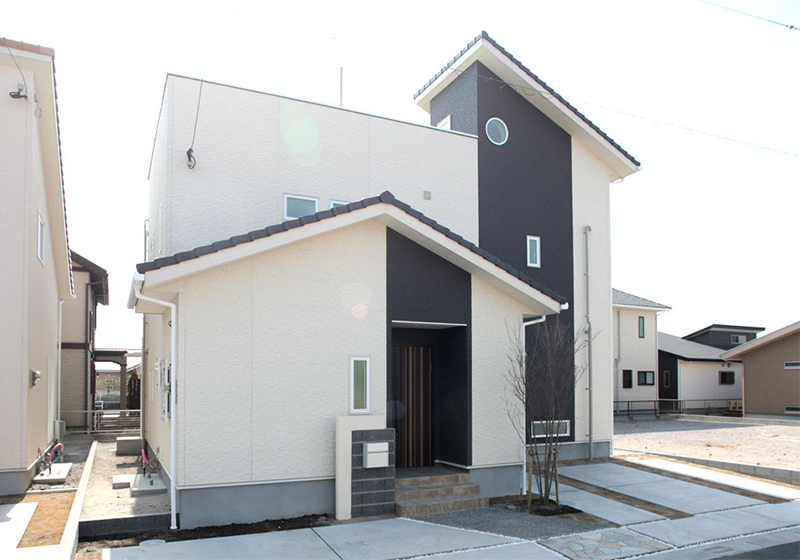

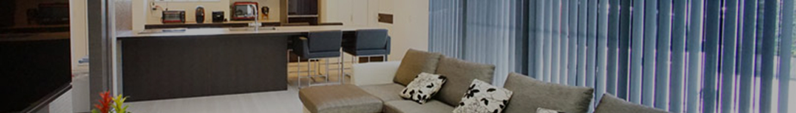
広々としたリビングは、全て同じ色調のトータルコーディネートされたインテリアで統一し、落ち着いた空間となりました。壁にもニッチ収納を設けるなど、遊び心と実用性を兼ね備えた住まいとなっております。2階からさらに続く階段を上がると当社自慢の屋上庭園が広がり、その先には広大な自然が見渡すことができるお家です。
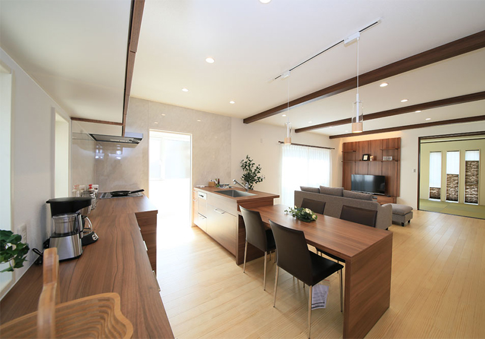 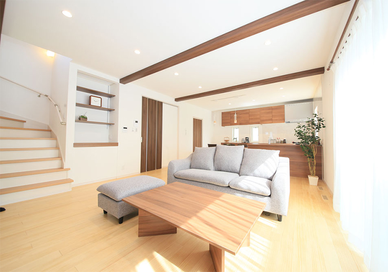 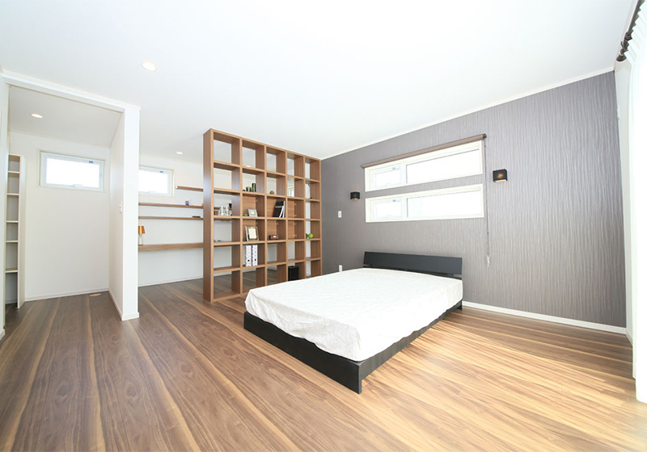 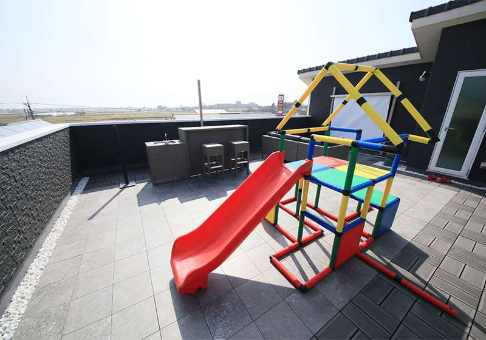 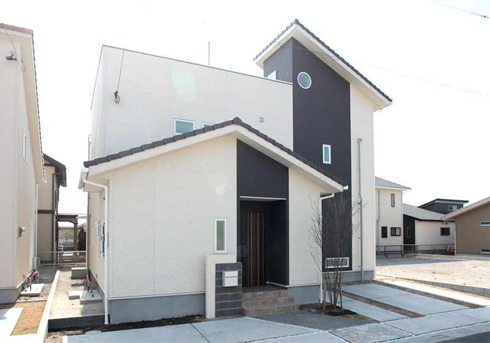